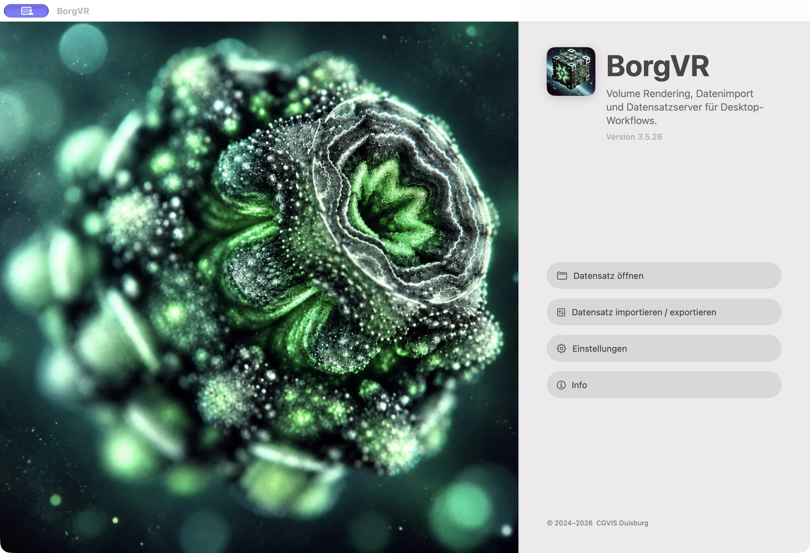
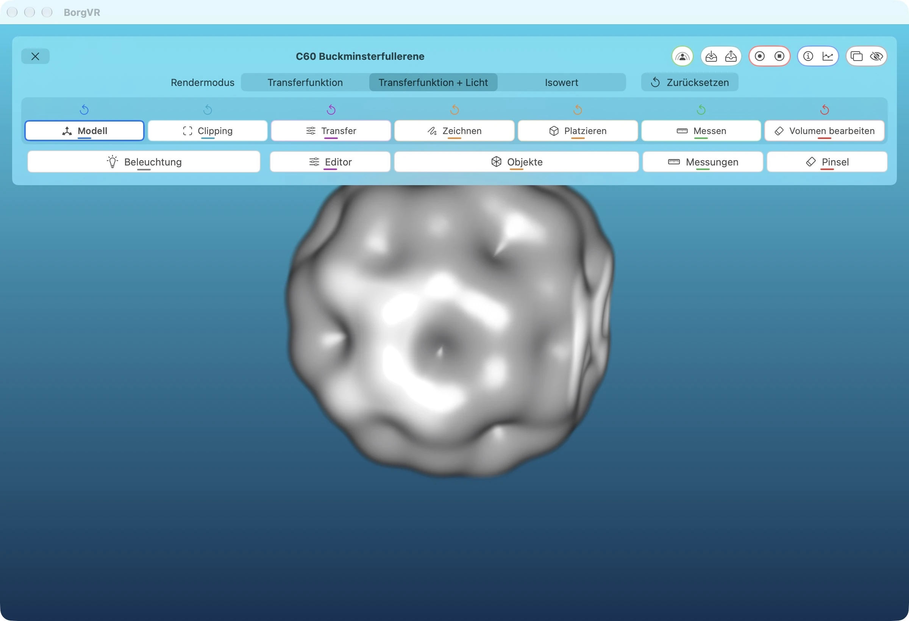
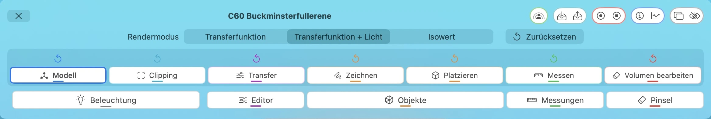
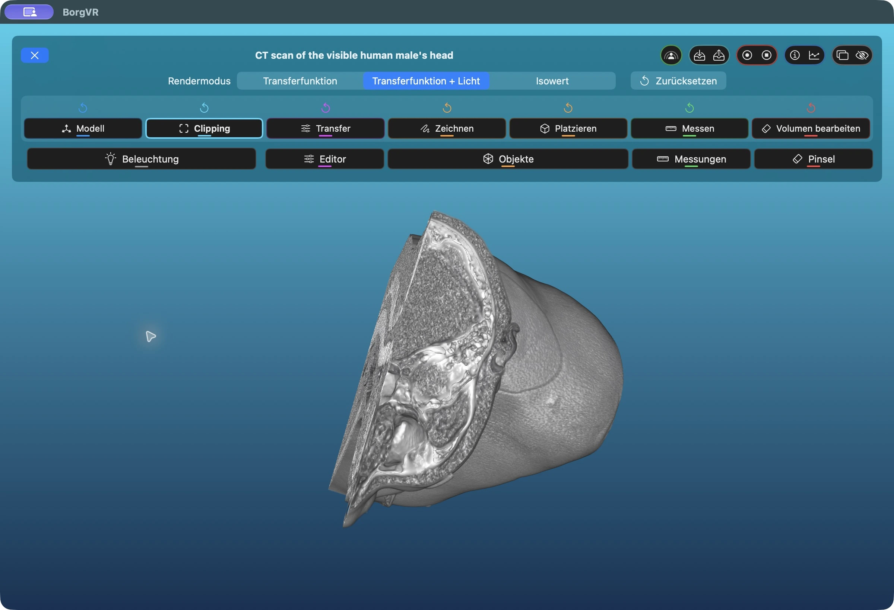
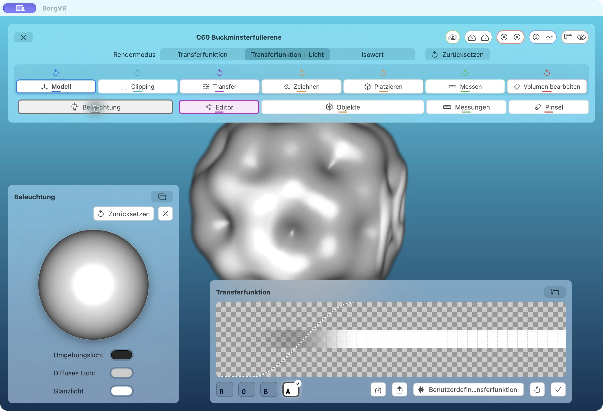
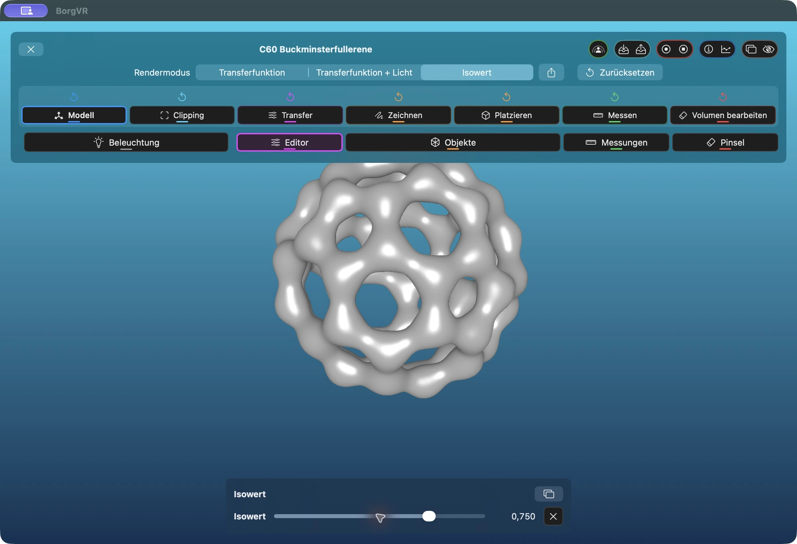
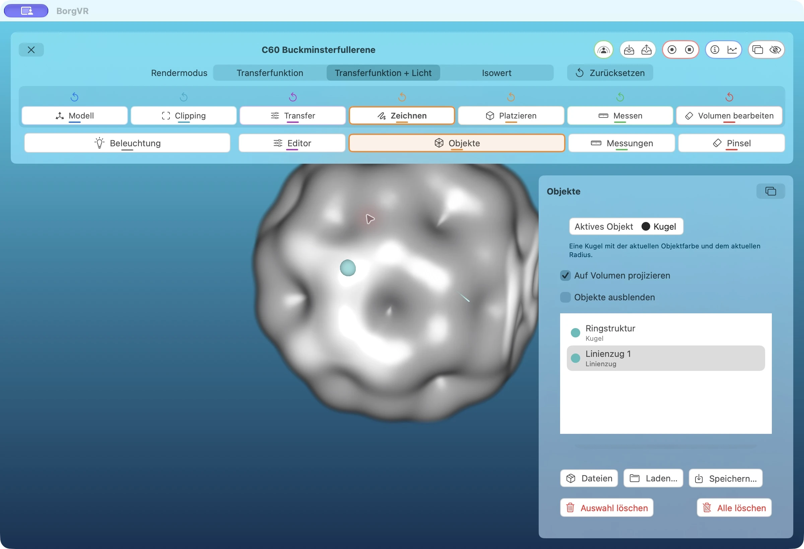
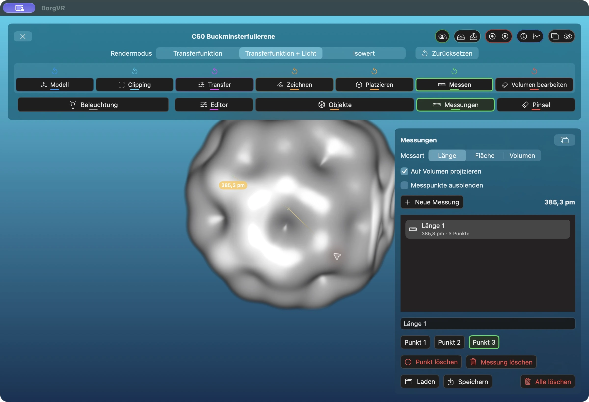
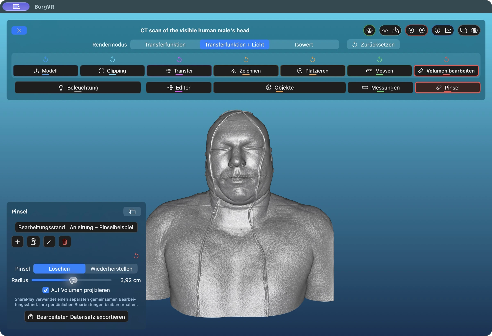
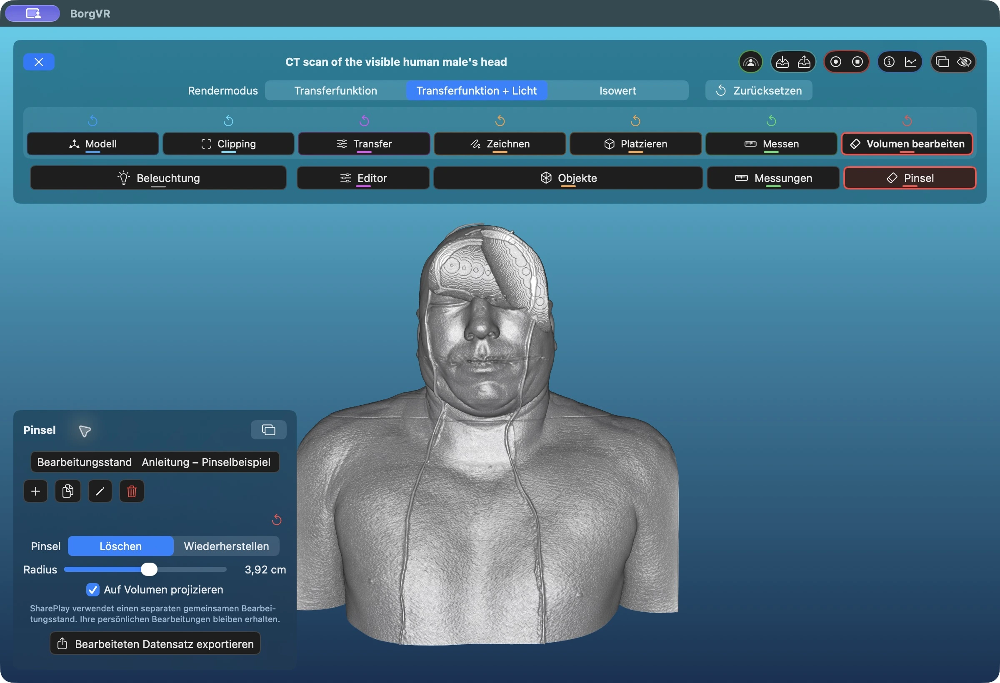

1. Open a dataset


- Open Dataset / Datensatz öffnen: Opens the selector for built-in, local, and server-provided BorgVR datasets. Try the built-in C60 dataset first.
- Import / Export: Converts source data to BorgVR format or exports existing data. This is not the normal Open dialog.
- Settings / Einstellungen: Configures data sources, rendering, import, and automatic saving. The import/export buttons in the settings header transfer the entire configuration as a
.borgvrsettingsfile.
2. Distinguish rendering from interaction


Transfer Function, Transfer Function + Lighting, and Isovalue are rendering modes: they determine how the image is calculated. Model, Clipping, Transfer, Draw, Place, Measure, and Edit Volume are interaction modes: they determine what dragging or clicking does. Selecting an interaction mode does not automatically open its tool window.
Start with Model: drag to rotate the volume with an arcball, use the arrow keys to translate it in the image plane, and use a zoom gesture to change its size. Keyboard commands require focus on the rendering area.
3. Read the control bar


- Top icon groups
- The X closes the dataset. On the right are SharePlay, the paired dataset-state save/restore buttons, recording, information/performance, and detach/hide controls. Additional actions depend on the session and settings.
- Colors
- Blue identifies Model, cyan Clipping, purple Transfer, orange Draw/Place, green Measure, and red volume editing. Color connects each mode to its targeted reset and tool. A highlighted tool button indicates an open window.
- Open tools
- Lighting and Editor open visualization tools. Objects belongs to Draw and Place, Measurements to Measure, and Brush to Edit Volume. The overlapping-rectangles icon on a panel detaches it into a separate window.
Reset only what you intend
The small arrows reset only their corresponding area and ask for confirmation. Model resets rotation, translation, and scale; Clipping removes the cuts; Transfer resets the current transfer function or isovalue. Draw and Place clear all objects, Measure clears all measurements, and Edit clears the active edit state. Draw and Place use the same object list.
4. Look inside with clipping planes


- Open the built-in Visible Human dataset and choose Transfer Function + Lighting. First use Model mode to rotate it into a suitable view.
- Switch to Clipping. Horizontal and vertical dragging move the view-aligned clipping planes. A zoom gesture moves the plane along the viewing direction.
- Return to Model to look at the exposed cut faces. The clipping planes remain fixed relative to the volume. Unlike brush editing, this requires no edit-state variant.
A small snap zone around zero makes it easier to unclip an axis. Move a plane back into this zone; only after moving beyond it does the opposite plane begin cutting. The small reset arrow above Clipping removes all cuts after confirmation, without deleting objects, measurements, or edits.
5. Adjust transfer function and lighting


- Select Transfer Function + Lighting and open Editor. The curve maps data values to color and opacity. R, G, and B select color components; A selects alpha/opacity. These letters do not select data channels.
- For multichannel data, also select the data channel. Each has its own transfer function. The C60 example has one channel, so this additional selector is not shown here.
- Open Lighting / Beleuchtung. Drag the preview sphere to change the light direction. The three color controls set ambient, diffuse, and specular light.
6. Inspect an isosurface


Choose Isovalue / Isowert and move the slider to reveal a different surface. On macOS, an additional export icon appears to the right of the rendering selector. It extracts the surface at the current value to an OBJ file; alternatively, press X with the rendering area focused. Extraction provides progress and cancellation.
7. Draw and place objects


- Open Objects / Objekte. Use Active Object / Aktives Objekt to choose the built-in sphere or a known imported object asset.
- Select Place / Platzieren and click the rendering. Project onto Volume / Auf Volumen projizieren uses the visible volume depth for placement.
- Select Draw / Zeichnen and drag over the image to create a stroke. The screenshot contains both a sphere named Ringstruktur and a stroke.
- Select entries in the list to edit their names, color, and radius. The list supports multiple selection. Spheres can additionally display a direction.
Files / Dateien and Load / Laden load saved annotation collections, not new polygon assets. Save / Speichern writes the collection as a .marker file. Object import in the Import/Export dialog instead creates a new .mesh asset from OBJ or STL.
8. Measure lengths, areas, and volumes


- Open Measurements / Messungen, select length, area, or volume, and activate Measure / Messen interaction mode.
- Place points in the rendering. A length needs at least two points and may contain multiple segments. An area needs three non-collinear points; further points project onto their plane. A volume needs at least four points that do not all lie in one plane.
- Areas and volumes use the points' convex hull. New Measurement / Neue Messung starts a separate entry. Point buttons select individual points; Delete Point removes that point, while Delete Measurement removes the selected entry.
BorgVR calculates using physical voxel spacing and chooses length, area, and volume units independently. Reliable physical dimensions depend on correct spacing in the dataset. Load and Save use .measurement files.
9. Edit a volume without changing the original




Select Edit Volume and open Brush. Create a separate edit state with Plus, select Erase, set the radius, and drag over the volume. Here, Project onto Volume is enabled, so the brush starts at the visible surface. Use Restore to bring back original values locally; the small red reset arrow discards all edits in the active state after confirmation.
- Erase / Löschen sets values inside the spherical brush to zero. Restore / Wiederherstellen brings back the original values. The radius is displayed in a physical unit appropriate to the dataset.
- Plus creates a new edit state; the copy button duplicates the current one. Rename and Delete apply to the selected state. The original dataset file remains unchanged.
- For multichannel volumes, the Brush panel lets you choose which data channels to edit. The screenshot shows a single-channel dataset.
- A red dot on Edit means brick updates are still pending. Background work prioritizes fine resolution before coarse levels. The dot does not necessarily indicate network transfer.
Reopening an edit state may display Preparing Edit State. Cancel opens the dataset with edits still pending and continues the work in the background; it does not discard those edits. This is especially useful with remote data.
10. Save the right result
- Dataset state
- The tray with a downward arrow in the top bar saves transfer functions, objects, measurements, and view parameters under the dataset name. Its upward-arrow neighbor restores them. Existing files are not overwritten without confirmation.
- Individual tools
- Load/Save controls inside a tool manage transfer-function, object, or measurement files specifically. Use these to share measurements separately, for example.
- Edited dataset
- Edits are stored separately from the original. Export Edited Dataset / Bearbeiteten Datensatz exportieren in the Brush panel writes a standalone new
.datafile with the edits applied and a new dataset ID. This is different from Save Dataset State.